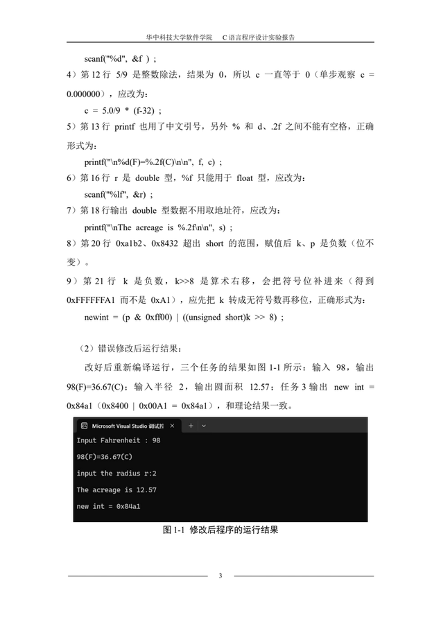

01 · 课程实验
C 语言程序设计实验报告（4 份）
- 解决什么问题
- 按学院模板产出规范的实验报告，同时把课程给出的「错误程序」定位、修正，并验证到与理论结果一致。
- 我负责什么
- 全部。改错、编程实现、测试用例设计（含越界输入）、运行截图、报告排版（目录 / 页码 / 图表题注）。
- 用了什么技术
- C（Visual Studio 编译、断点、单步、观察窗口）；Python 脚本生成 DOCX；测试覆盖正常值与出错分支。
- 最大困难
- 不报错的错。
!x%i、if(flag=1)、悬挂 else、int i=x截断、k>>8补符号位——编译器一句警告都不给，只能靠单步盯变量的值。
四份实验一览
- · 实验一 · 表达式与标准 I/O
- · 实验二 · 流程控制
- · 实验三 · 函数与程序结构
- · 实验四 · 编译预处理